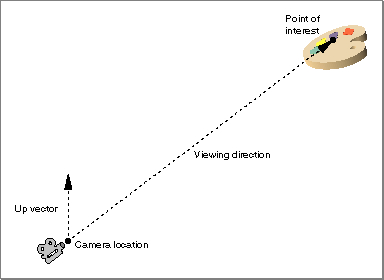
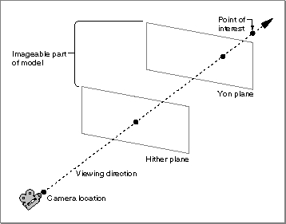
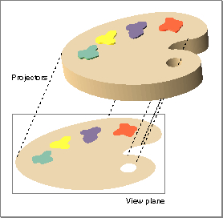
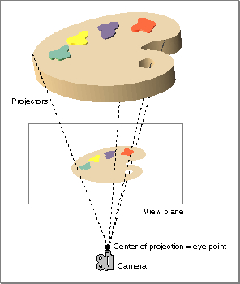
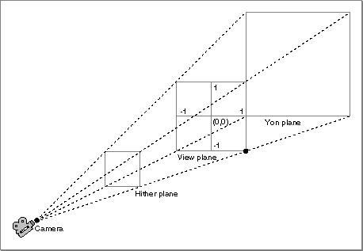
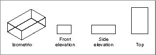
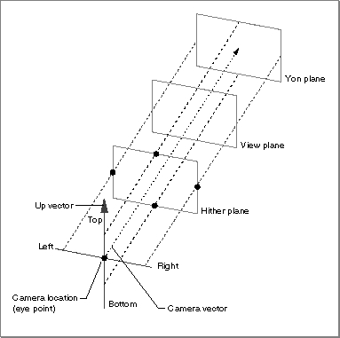
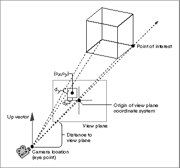
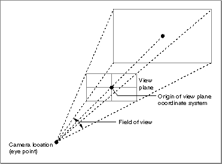
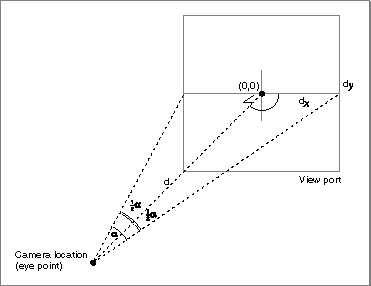

About Camera Objects
A camera object (or, more briefly, a camera) is a type of QuickDraw 3D object that you use to define a point of view, a range of visible objects, and a method of projection for generating a two-dimensional image of those objects from a three-dimensional model. A camera is of typeTQ3CameraObject, which is a type of shape object.QuickDraw 3D defines three types of cameras:
These types of cameras differ in their methods of projection, as explained more fully later in this section. All three types of cameras share some basic properties, which are maintained in a camera data structure, defined by the
- orthographic cameras
- view plane cameras
- aspect ratio cameras
TQ3CameraDatadata structure.typedef struct TQ3CameraData { TQ3CameraPlacement placement; TQ3CameraRange range; TQ3CameraViewPort viewPort; } TQ3CameraData;These fields specify the location and orientation of the camera, the visible range of interest, and the camera's view port and projection method. The following sections explain these concepts in greater detail.Camera Placements
A camera location is the position, in the world coordinate system, of a camera. A camera placement is a camera location together with an orientation and a direction. You specify a camera's orientation by indicating its up vector, the vector that defines which direction is up. You specify a camera's direction by indicating a point of interest, the point at which the camera is aimed. The vector that is the result of subtracting the camera location from the point of interest is the viewing direction or camera vector. In general, a camera's up vector should be perpendicular to its viewing direction and should be normalized. You can, however, specify any up vector that isn't colinear with the viewing direction. Figure 9-1 shows the placement of a camera.Figure 9-1 A camera's placement
- Note
- Because a camera defines a point of view onto a model, the camera location is also called the eye point.

In QuickDraw 3D, you specify a camera's placement by filling in the fields of a camera placement structure, defined by theTQ3CameraPlacementdata type.typedef struct TQ3CameraPlacement { TQ3Point3D cameraLocation; TQ3Point3D pointOfInterest; TQ3Vector3D upVector; } TQ3CameraPlacement;See "Camera Placement Structure" on page 9-17 for complete information about the camera placement structure.Camera Ranges
Often, you're not interested in all the objects in a model that are visible from the current placement of a camera. Some objects may be too far away from the camera location to create a useful image when projected onto the two-dimensional view plane, and some objects may be so close to the camera that they obscure other important objects. QuickDraw 3D, like most 3D graphics systems, provides a mechanism for ignoring objects that lie outside your current range of interest. You do this by defining two clipping planes that delimit the part of a model that is rendered. The hither plane is a plane perpendicular to the viewing direction that indicates the clipping range closest to the camera. Any objects or parts of objects that lie between the camera and the hither plane do not appear in a rendered image. Similarly, the yon plane is a plane perpendicular to the viewing direction that indicates the clipping range farthest from the camera. Any objects or parts of objects that lie beyond the yon plane do not appear in a rendered image. In short, only objects or parts of objects that lie between the hither and yon planes appear in a rendered image, as shown in Figure 9-2.Figure 9-2 The hither and yon planes

The extent between the hither and yon planes of a camera is the camera range, defined by the
- Note
- The hither and yon planes are sometimes called the near and far planes, respectively.
TQ3CameraRangedata structure.typedef struct TQ3CameraRange { float hither; float yon; } TQ3CameraRange;The clipping planes are specified by distances along the viewing direction from the camera location. The distance to the yon plane should always be greater than the distance to the hither plane, and the distance to the hither plane should always be greater than 0.0.View Planes and View Ports
As you've learned, QuickDraw 3D provides three different types of cameras, which are distinguished from one another by their method of projection--that is, by their method of generating a two-dimensional image of the objects in a three-dimensional model. A projection of an object is the set of points in which rays emanating from the object (called projectors) intersect a plane (called the view plane). The projection created when the projectors are all parallel to one another is called a parallel projection, and the projection created when the projectors all intersect in a point is called a perspective projection. The point at which the projectors in a perspective projection intersect one another is the center of projection.Figure 9-3 illustrates a parallel projection of an object. Notice that, because the projectors are parallel, the size of the two-dimensional image corresponds exactly to the size of the three-dimensional object being projected, no matter where the view plane is located. As a result, you do not need to specify the location of the view plane when using parallel projections. See "Orthographic Cameras" on page 9-11 for details on how to specify a parallel projection.
- Note
- Currently, QuickDraw 3D provides only normal view planes, where the view plane is perpendicular to the viewing direction.
Figure 9-3 A parallel projection of an object

Figure 9-4 illustrates a perspective projection of an object. As you can see, the location of the view plane is very important in a perspective projection. When the view plane is close to the camera, the projectors are close together and the image they create is small. Conversely, when the view plane is farther away from the camera, the projectors are farther apart and the image they create is larger. Similarly, no matter where the view plane is located, the size of the projected image of an object is inversely proportional to the distance of the object from the view plane. Objects farther away from the view plane appear smaller than objects of the same size closer to the view plane. This effect is perspective foreshortening.Figure 9-4 A perspective projection of an object

When using perspective projection, you therefore need to specify the location of the view plane. QuickDraw 3D provides two types of perspective cameras, which specify the location of the view plane in different ways. See "View Plane Cameras" on page 9-13 and "Aspect Ratio Cameras" on page 9-15 for complete details on these two types of perspective cameras.A camera view port is the rectangular portion of the view plane that is to be mapped into the area specified by the current draw context. A draw context is usually just a window, so the view port defines the portion of the view plane that appears in the window. By default, a camera's view port is the entire square portion of the view plane that is bounded by the view volume (either a view box, for parallel projections, or a view frustum, for perspective projections). Figure 9-5 shows the default camera view port for a perspective camera.
Figure 9-5 The default camera view port

You can select a smaller portion of the view plane by filling in a camera view port structure, defined by theTQ3CameraViewPortdata type.typedef struct TQ3CameraViewPort { TQ3Point2D origin; float width; float height; } TQ3CameraViewPort;For example, to display only the right side of the view plane, you would set theoriginfield to the point (0, 1), thewidthfield to the value 1.0, and theheightfield to the value 2.0.
- Note
- The image displayed in a draw context is not necessarily the image drawn on the view port. The view port image is scaled to fit into the draw context pane and then clipped with the draw context mask. See the chapter "Draw Context Objects" for information about draw context panes and masks, and for further details on the relationship between a view port and a draw context.

Orthographic Cameras
An orthographic camera is a camera that uses parallel projection to generate a two-dimensional image of the objects in a three-dimensional model. In particular, an orthographic camera uses orthographic projection, in which the view plane is perpendicular to the viewing direction. Parallel projections are in general less realistic than perspective projections, but they have the advantage that parallel lines in a model remain parallel in the projection, and distances are not distorted by perspective foreshortening.The two most common types of orthographic projection are isometric projection and elevation projection. An isometric projection is an orthographic projection in which the viewing direction makes equal angles with each of the three principal axes of an object. An elevation projection is an orthographic projection in which the view plane is perpendicular to one of the principal axes of the object being projected. Figure 9-6 shows isometric and elevation projections of an object.
Figure 9-6 Isometric and elevation projections

The view volume associated with an orthographic camera is determined by a box aligned with the viewing direction, as shown in Figure 9-7. To specify the box, you provide the left side, top side, right side, and bottom side. The values you use to specify these sides are relative to the camera coordinate system defined by the camera location and the viewing direction. The box defines the four horizontal and vertical clipping planes.Figure 9-7 An orthographic camera

See "Orthographic Camera Data Structure" on page 9-20 for details on the data you need to provide to define an orthographic camera. See "Managing Orthographic Cameras," beginning on page 9-29 for a description of the routines you can use to create and manipulate orthographic cameras.View Plane Cameras
A view plane camera is a type of perspective camera defined in terms of an arbitrary view plane. In general, you'll use a view plane camera to create a perspective image of a specific object in a scene. The view plane camera is the only type of perspective camera provided by QuickDraw 3D that allows off-axis viewing (that is, viewing where the center of the projected object on the view plane is not on the camera vector), which is convenient when scrolling an image up or down, or left to right.The view frustum associated with a view plane camera is determined by a view plane (located at a specified distance from the camera) and the rectangular cross section of an object, as shown in Figure 9-8. The point at which the camera vector intersects the view plane defines the origin of the view plane coordinate system. You specify a rectangular cross section of an object by specifying its center (in the view plane coordinate system) and the half-width and half-height of the cross section. In Figure 9-8, the center of the cross section is the point (cx, cy), and the half-width and half-height are the distances dx and dy, respectively.
Figure 9-8 A view plane camera

See "View Plane Camera Data Structure" on page 9-20 for complete details on the data you need to provide to define a view plane camera. See "Managing View Plane Cameras," beginning on page 9-35 for a description of the routines you can use to create and manipulate view plane cameras.Aspect Ratio Cameras
An aspect ratio camera is a type of perspective camera defined in terms of a viewing angle and a horizontal-to-vertical aspect ratio, as shown in Figure 9-9. With an aspect ratio camera, you don't specify the distance to the view plane directly (as you do with a view plane camera).Figure 9-9 An aspect ratio camera

The orientation of the field of view is determined by the specified aspect ratio. If the aspect ratio is greater than 1.0, the field of view is vertical. If the aspect ratio is less than 1.0, the field of view is horizontal. In general, to avoid distortion, the aspect ratio should be the same as the aspect ratio of the camera's view port.You can easily see that as the field of view increases, the view plane must move closer to camera location for the view port to fit within the field of view, in which case the image size decreases (because of perspective foreshortening). Conversely, as the field of view decreases, the view plane must move away from the camera location, and the image size increases.
Note that you can always find a view plane camera that is projectively identical to any aspect ratio camera. (The converse is not true: it's not always possible to find an aspect ratio camera that is projectively identical to an arbitrary view plane camera.) Consider the aspect ratio camera shown in Figure 9-10. It's easy to specify a view plane camera that creates the same image as that aspect ratio camera. To do this, set the center of the cross section (cx, cy) to be the origin (0, 0), and set the half-width dx to be the quantity d tan(a/2), where d is the distance from the camera to the view plane and a is the horizontal field of view. (The half-angle applies to the smaller of the two view port dimensions.)
Figure 9-10 The relation between aspect ratio cameras and view plane cameras

See "Aspect Ratio Camera Data Structure" on page 9-21 for more details on the data you need to provide to define an aspect ratio camera. See "Managing Aspect Ratio Cameras," beginning on page 9-43 for a description of the routines you can use to create and manipulate aspect ratio cameras.